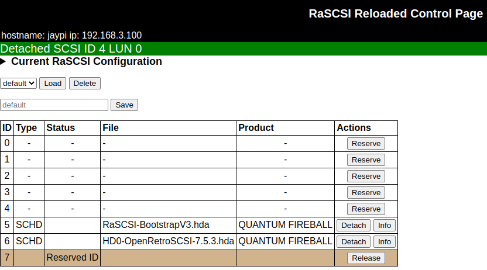
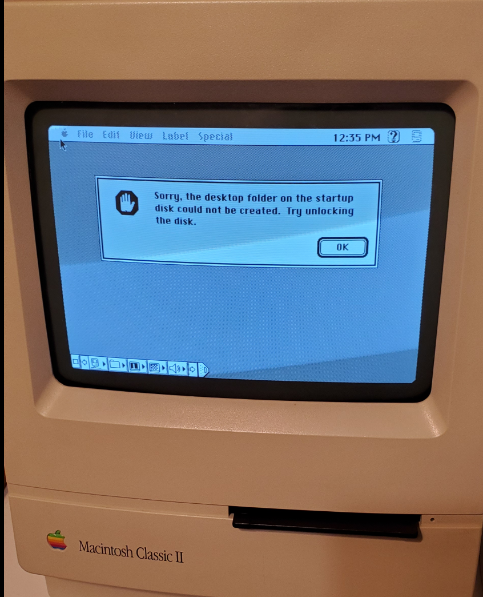
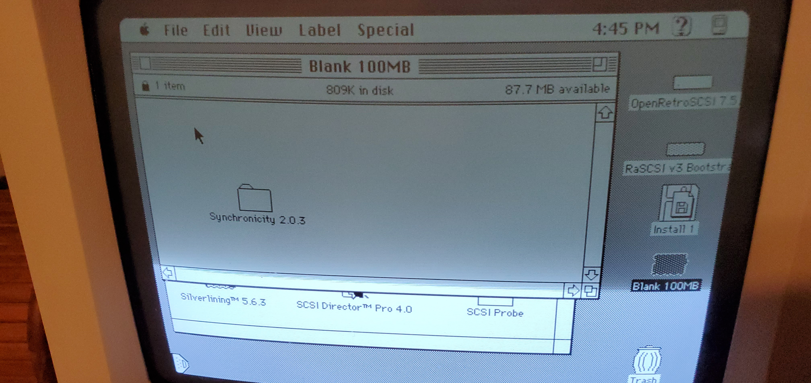
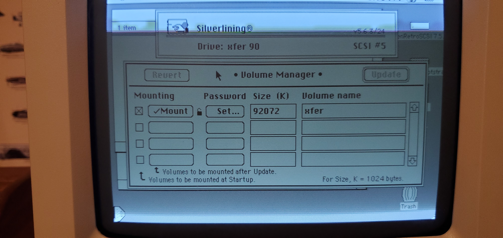
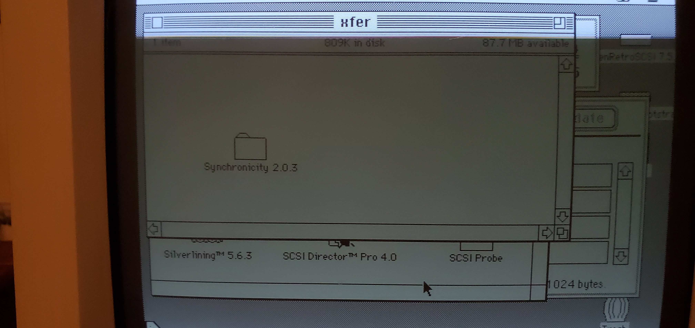

Mount HDA Images
using the web interface
I found the Mac Librarian tutorial to be very helpful. You can either do a clean OS install on a blank hd image or download a premade image from either the Macintosh Garden or the BlueSCSI site.
Mac Librarian tutorial - Mac Setup and RaSCSI web interface
Macintosh Garden RaSCSI images
Premade images from EricHelgeson's BlueSCSI wiki
I had success using this image: 7.5.3 Image
Upload then mount System 7.5.3 and RaSCSI bootstrap v3 hard drive images

If an image comes up as "write protected" use Silverlining to unlock
 
 